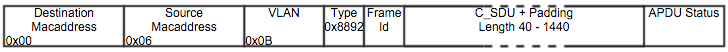
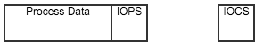
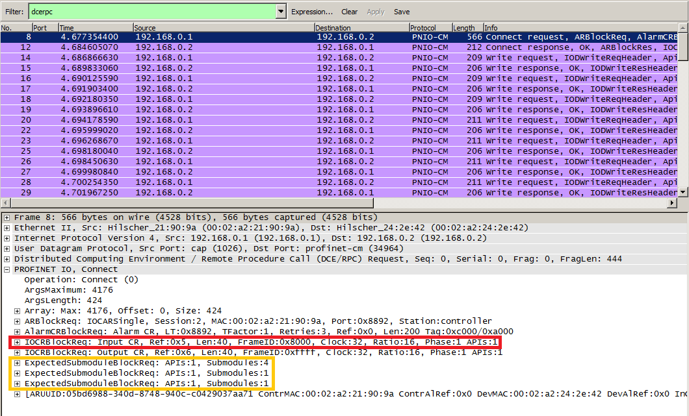
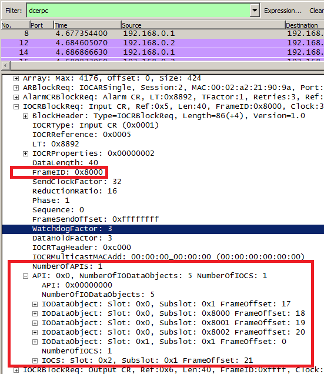
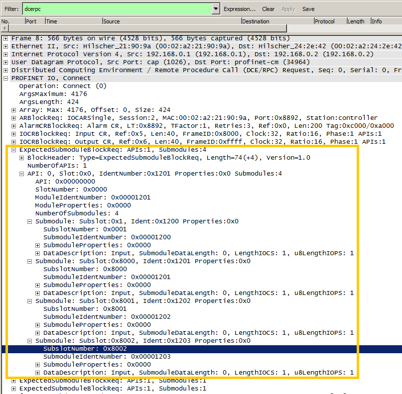
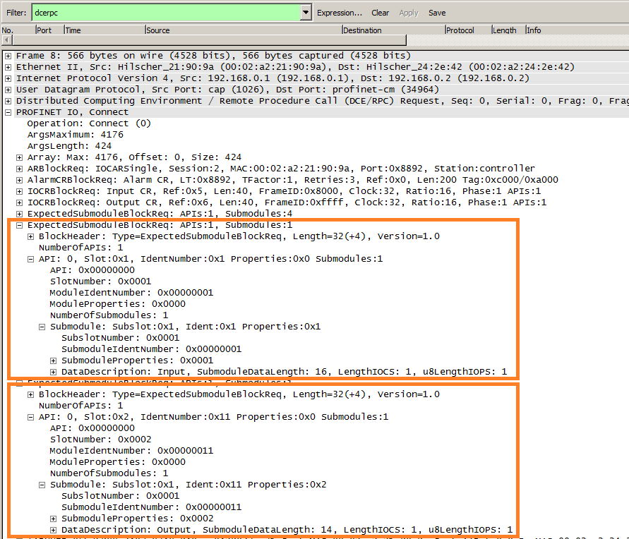
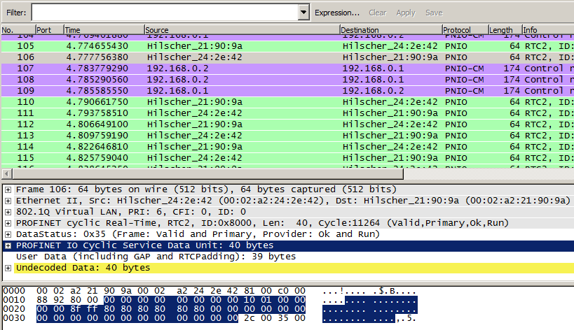
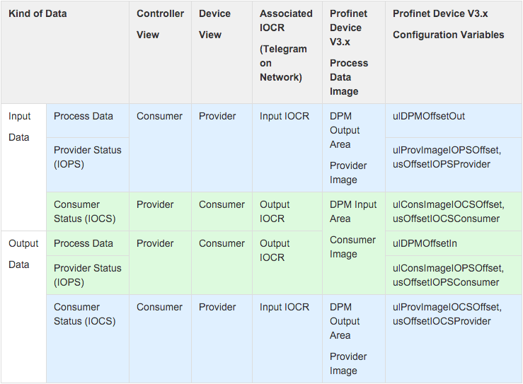

前言
IOPS
IO Provider Status 表示 IO 数据的提供状态， 用来标识数据是否有效，避免应用建立一个另外的诊断信息请求，节省资源。
IOCS
IO Consumer Status 表示 IO 数据的消费状态。
如何理解IOCS和IOPS
原文：A device mirrors the respective IOCS when sending the input data for the output data received from the controller, and the controller mirrors the IOPS for the received input data from the device when sending the output data.
详细内容出现在书《Industrial communication with PROFINET》- Manfred Popp
介绍
以下文档描述了 PROFINET 周期性过程数据交换报文的结构。这些报文在 PRONFINET IO 设备和 PROFINET IO 控制器之间交换。通过常用工具 WireShark 的简单设置，这些帧能够被纪录下来。一个常犯的错误是单纯依靠 WireShark 的解析能力，通过它显示的一些信息来解析这些报文。不幸的是，旧版本的 WireShark 并不能很好的解析并且较新的版本需要一个合适的网络纪录来显示正确的值。下面提供了一个手动解析这些报文的方法。
PROFINET 过程数据报结构
下图展示了一个 PROFINET 周期性过程数据报的一般结构：

此结构基于使用 VLAN 标签的第二层以太网帧。当每个 PROFINET IO 设备和 PROFINET IO 控制器发送 VLAN 域的时候，有可能被中间的网络交换机移除掉。分析报文的时候这个需要考虑到。C_SDU 域包含需要传输的数据。带 VLAN 的以太网帧的最小长度是 64 字节，如果 C_SDU 域 的长度小于 40 字节会自动填补。APDU 状态域 包含周期计数和额外的状态字节。
C_SDU 由两种类型的数据组成：
- IO 数据对象
- IOCS 对象
每个数据项与一个特定的子模块相连。IO 数据对象包括过程数据和子模块的相关 IOPS。IOCS 对象仅仅包含子模块的 IOCS。一个 C_SDU 常常包含多个对象。在 C_SDU 中的过程数据的实际位置已经在连接开始的时候的 RPC Connect Service 中被参数化。在两个相邻的项目中可能被插入额外的填充值。数据项的结构由下图展示。通常 IOPS 和 IOCS 的长度为一字节。

解析示例
下面通过一个例子描述整个过程数据报的解析过程。解析的帧是一个输入 IOCR。
提取结构信息
第一步要从 RPC Connect Service 中分析出需要的结构信息。通过 WireShark 很简单就能完成。下图展示了 RPC Connect Request 和需要被用来解析一个 Input IOCR 报文的部分。红色框住的是 Input IOCR 的描述，包含了帧 ID 和在 C_SDU 里面的数据项的偏移值。相关的过程数据能从黄色框中的 Submodule Requests 提取。

开始解析需要创建一个包含所有数据项偏移值的列表。这些信息从 IOCR Block Request 中提取。在本例中我们主要关注 Input IOCR。帧中帧 ID 是 0x8000。 Output IOCR 帧 ID 必须从 RPC Connect Response 帧中提取出来，Output IOCR 帧 ID 由设备分配。下图展示了期望的 Input IOCR 的 IOCR Block Request。

根据上面的信息，我们创建了下表。
| C SDU Offset | Kind | Api | Slot | Subslot | Length of Data | Length of Item |
|---|---|---|---|---|---|---|
| 0 | IO Data | 0 | 0x0001 | 0x0001 | ||
| 17 | IO Data | 0 | 0x0000 | 0x0001 | ||
| 18 | IO Data | 0 | 0x0000 | 0x8000 | ||
| 19 | IO Data | 0 | 0x0000 | 0x8001 | ||
| 20 | IO Data | 0 | 0x0000 | 0x8002 | ||
| 21 | IOCS | 0 | 0x0002 | 0x0001 | - |
现在所有的偏移值都知道了。下一步就是提取各项的大小。这些长度能从 Expected Submodule Blocks 描述的子模块中提取出来。第一个 Expected Submodule Blocks 由下图展示：

从这些信息中我们能得到 API 0 和 Slot 0 数据项的长度。这边导入指针是为了检查正确的数据描述元素。每个子模块都能分配一个输入数据描述 Input-Data Description 和一个输出数据描述 Output-Data Description。对于 Input IOCR 来说 Input Data Description 和 IO Data 有关， Output Data Description 和 IOCS 项 有关。Output IOCR 反之亦然。在示例中所有的第一个 Expected Submodule Block 的子模块有 0 个输入数据，1 字节 IOPS 和 1 字节 IOCS。（IOPS/IOCS 长度通常为 1 字节。）
| C SDU Offset | Kind | Api | Slot | Subslot | Length of Data | Length of Item |
|---|---|---|---|---|---|---|
| 0 | IO Data | 0 | 0x0001 | 0x0001 | ||
| 17 | IO Data | 0 | 0x0000 | 0x0001 | 0 | 0 + 1 |
| 18 | IO Data | 0 | 0x0000 | 0x8000 | 0 | 0 + 1 |
| 19 | IO Data | 0 | 0x0000 | 0x8001 | 0 | 0 + 1 |
| 20 | IO Data | 0 | 0x0000 | 0x8002 | 0 | 0 + 1 |
| 21 | IOCS | 0 | 0x0002 | 0x0001 | - |
我们用剩下的 Expected Submodule Blocks 信息完善表格：

完成的表格:
| C SDU Offset | Kind | Api | Slot | Subslot | Length of Data | Length of Item |
|---|---|---|---|---|---|---|
| 0 | IO Data | 0 | 0x0001 | 0x0001 | 16 | 16 + 1 |
| 17 | IO Data | 0 | 0x0000 | 0x0001 | 0 | 0 + 1 |
| 18 | IO Data | 0 | 0x0000 | 0x8000 | 0 | 0 + 1 |
| 19 | IO Data | 0 | 0x0000 | 0x8001 | 0 | 0 + 1 |
| 20 | IO Data | 0 | 0x0000 | 0x8002 | 0 | 0 + 1 |
| 21 | IOCS | 0 | 0x0002 | 0x0001 | - | 1 |
这表格包含了一些零数据长度的 IO Data。这些 IO Data 对象表明了在 PROFINET 中，一个没有任何过程数据的子模块都被认为是一个有 0 字节长度过程数据的输入子模块 Input Submodule。 |
解析过程数据报
最后一步是用上文创建的表格解析过程数据报。下图展示了一个 Input IOCR 的特定数据报。为了正确的选择解析不仅 Frame ID 需要加入计算，而且数据报的 Mac 地址 也要加入计算，因为在 RT Mode 下同样的 Frame ID 可能被不同的设备用到。下图中，帧 ＃106 被选择用来分析。

蓝色标记的部分是包含实际过程数据的 C_SDU部分（包括填充）。基于我们的表格可以提取到如下数据：
| C SDU Offset | Kind | Api | Slot | Subslot | Length of Data | Length of Item | Data | Status(IOPS/IOCS) |
|---|---|---|---|---|---|---|---|---|
| 0 | IO Data | 0 | 0x0001 | 0x0001 | 16 | 16 + 1 | 0x00 0x00 0x00 0x00 0x00 0x00 0x00 0x00 0x10 0x01 0x00 0x00 0x00 0x00 0x8f 0xff | 0x80 |
| 17 | IO Data | 0 | 0x0000 | 0x0001 | 0 | 0 + 1 | - | 0x80 |
| 18 | IO Data | 0 | 0x0000 | 0x8000 | 0 | 0 + 1 | - | 0x80 |
| 19 | IO Data | 0 | 0x0000 | 0x8001 | 0 | 0 + 1 | - | 0x80 |
| 20 | IO Data | 0 | 0x0000 | 0x8002 | 0 | 0 + 1 | - | 0x80 |
| 21 | IOCS | 0 | 0x0002 | 0x0001 | - | 1 | - | 0x80 |
状态值 0x80 表示相关的过程数据对于 IO Data 对象是有效的。对于 IOCS 对象，它表明相关过程数据的 “消费者” 在使用这个数据。（这个相关的过程数据发送方向相反，因此不是 IOCR 的一部分。换句话说，这个例子中 Slot 0x1 Subslot 0x1 是一个输入子模块 Input Submodule， Slot 0x2 Subslot 0x1 是一个输出子模块 Output Submodule。）
备注
PROFINET 过程数据交换包括了一些额外的限制，设备必须遵守这些限制来确保适当的数据交换：
- 一些现有的 IO 控制器（例如 S7-300，S7-400）从
RPC Application Ready Request之后不识别IOPS从 “BAD” 到 “GOOD” 的变化。如果遇到这种情况， IO 设备必须返回一个子模块报警Submodule Alarm给控制器。 - 期望的 IO 设备应该延后
RPC Application Ready Request直到设备提供的IOPS和IOCS设置为 GOOD。然后再下发RPC Application Ready Request。如果 IO 设备因为特殊的原因（比如 IO 设备传输了不合法的参数）没法设置特定子模块的IOPS为 GOOD，设备应该设置子模块状态到application ready pending，为子模块增加诊断然后下发RPC Application Ready Request。RPC Application Ready Request会包含一个Module Diff Block指示该子模块的问题。一些时候它可能然后又可以设置子模块的IOPS为 GOOD，这个时候应用应该复位子模块状态，移除诊断再返回一个子模块报警。
PROFINET 过程数据模型
PROFINET 定义了一个生产者－消费者模型。过程数据由生产者产生由消费者接收。此外一个生产者状态和消费者状态被交换。观察角度不同 IO 控制器或者 IO 设备既可以是生产者也可以是消费者。下表试图更详细的解释这种关系。通常，过程数据从 IO 设备发往 IO 控制器被视为输入数据 Input Data，从 IO 控制器发往 IO 设备被视为输出数据 Output Data。表格的最后一列描述了 PROFINET IO Device V3.x Configuration Packet 变量和相关的响应元素的联系。蓝色行表明从 IO 设备发送到 IO 控制器的数据，绿色行表明从 IO 控制器发送到 IO 设备的数据。

本作品由 Jesse Guo 创作，采用知识共享署名-非商业性使用 4.0 国际许可协议进行许可。修改，参照或者转载请注明出处。